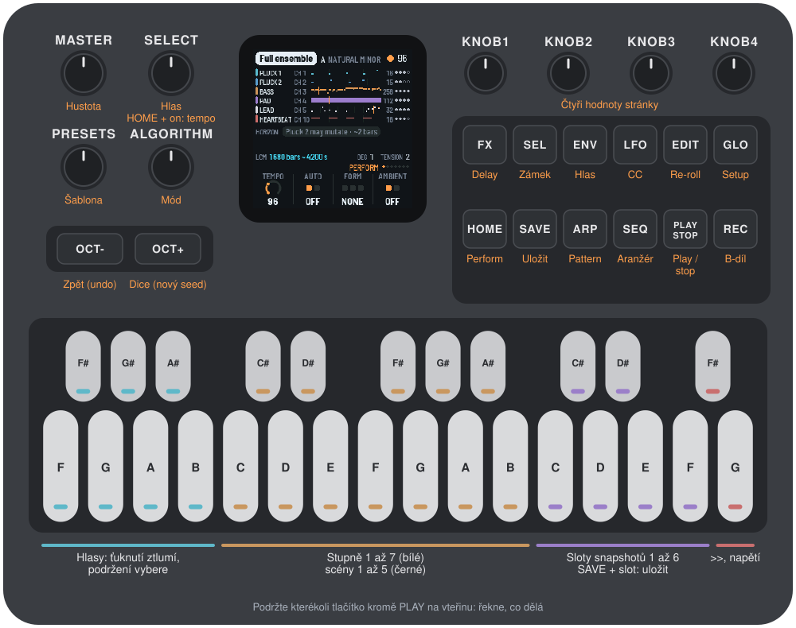

1Instalace
Z prohlížeče. Otevřete instalační stránku v Chromu nebo Edgi, připojte FM-1 přes USB (datovým kabelem, přímo do počítače) a stiskněte Instalovat. Prohlížeč se jednou zeptá, jestli smí používat MIDI: povolte to. Do počítače se nic neinstaluje.
Z příkazové řádky. Potřebujete balíček firmwaru (ke stažení na webu, berlinan-X.Y.fwsc, nebo app/build/berlinan.fwsc z ./build.sh; viz BUILDING.md), datový USB kabel a Python 3 s mido a python-rtmidi (pip3 install mido python-rtmidi). Připojte FM-1 a ve složce se zdrojovým kódem spusťte:
python3 base/tools/fm1_install.py app/build/berlinan.fwscAť tak, či onak, během zápisu kabel neodpojujte. Po dokončení se FM-1 restartuje do Berlinanu a stránka nebo skript ověří, že hlásí zapsanou verzi.
Návrat: „Zpět k původnímu firmwaru“ na instalační stránce zapíše zpátky vlastní firmware M-VAVE (FM-1 V15): soubor si stáhnete od M-VAVE a stránka ho před zápisem zkontroluje. Totéž udělá updater od M-VAVE, M-UPGRADE, i skript (fm1_install.py FM-1.fwsc).
Instalace jiného firmwaru je na vlastní riziko. Kdyby FM-1 někdy nenastartoval, viz Záchrana FM-1, který nenastartuje.
2Začínáme
- Připojte. Zapojte FM-1 přes USB do routeru. Router uvidí MIDI zařízení „FM-Berlinan“. Jeho výstup nasměrujte do syntezátorů: každý hlas má svůj kanál (ukazuje je stránka Perform, změníte ho na stránce Voice).
- Hrajte. Stiskněte PLAY. První skladba je Demo trio (Pluck 1, Pluck 2, Bass) v A přirozené moll, od 1. taktu, s novým seedem. FM-1 pošle MIDI Start a clock (synchronizace INT).
- Ztlumte a zase zapněte. Ťukněte na klávesu hlasu (F3 až B3): hlas ztichne a jeho klávesa zhasne. Ťukněte znovu.
- Posuňte harmonii. Stiskněte bílou klávesu od C4: stupně 1 až 7, na začátku dalšího taktu.
- Změňte skladbu. Otočte PRESETS: Demo trio, Full ensemble, Ambient drift. Během hraní nastoupí na začátku dalšího taktu. EDIT přegeneruje každý nezamčený hlas (re-roll); OCT+ je Dice, nový seed.
- Prořeďte ji. MASTER je hustota: dolů soubor proředí, nahoře je 100 %.
- Zastavte. Znovu PLAY. Každý znějící tón dostane svůj note-off.
Nevíte, co tlačítko dělá? Podržte ho vteřinu: ukáže se karta, která to řekne. Pak ho pusťte a nic dalšího se nestane.
3Ovládání

Klávesy
| Klávesy | Co dělají |
|---|---|
| F3 F#3 G3 G#3 A3 A#3 B3 | Hlasy: Pluck 1, Pluck 2, Bass, Pad, Lead, Drone, Heartbeat. Stisk hlas vybere. Ťuknutí (kratší než 1 s): navíc ho ztlumí nebo zase zapne. Hlas, který aranžér drží zpátky (ukazuje WAITS), ťuknutí přivede do hry. Podržení (1 s a déle): hlas vybere bez ztlumení a EDIT, REC nebo SEL stisknuté mezitím působí na tento hlas (viz níže). Svítí: hraje. Bliká: WAITS. Nesvítí: ztlumený, nebo v této šabloně není. |
| C4 D4 E4 F4 G4 A4 B4 (bílé) | Stupně 1 až 7: harmonie se na začátku dalšího taktu posune diatonicky. Platný stupeň svítí, chystaný bliká. |
| C#4 D#4 F#4 G#4 A#4 | CC scény 1 až 5: ovladače se během 8 taktů plynule přesunou ke scéně šablony. Jen scény, které šablona má (Ambient drift dvě, ostatní žádnou; klávesy za nimi nedělají nic). Scény šablony svítí slabě, ta, ke které přesun směřuje, svítí naplno. |
| C5 C#5 D5 D#5 E5 F5 | Sloty snapshotů 1 až 6. Ťuknutí: vyvolá slot na začátku dalšího taktu (prázdný slot hlásí EMPTY). Podržený SAVE + slot: uloží do něj aktuální stav. Obsazené sloty svítí. |
| F#5 | >>: další změna aranžéra, na začátku dalšího taktu. |
| G5 | Jedna jednotka napětí (na hlasu pad, jinak na prvním hlasu). Svítí, dokud nějaké zbývá. |
Tlačítka
| Tlačítko | Co dělá |
|---|---|
| PLAY | Spustí a zastaví přehrávání. Reaguje na stisk a nemá kartu nápovědy. V INT navíc posílá MIDI Start, Stop a clock. Během hraní svítí zeleně. |
| REC | B-díl. S podrženou klávesou hlasu: prázdný cyklus pro tento hlas. |
| EDIT | Re-roll každého nezamčeného hlasu. S podrženou klávesou hlasu: přegeneruje tento hlas. |
| SEL | S podrženou klávesou hlasu nebo na stránce Voice: zamkne nebo odemkne hlas. |
| SAVE | Uloží projekt a šest slotů (viz Ukládání). Podržený SAVE + klávesa slotu: uloží ten slot. |
| OCT- | Zpět (undo): posledních 20 stavů, jeden se uloží před každou destruktivní akcí. |
| OCT+ | Dice: nový hlavní seed, během hraní nastoupí na začátku dalšího taktu. |
| HOME ENV ARP LFO SEQ FX GLO | Stránky: Perform, Voice, Pattern, CC, Arranger, Delay, Setup. Rozsvícené tlačítko ukazuje aktuální stránku. |
Podržením OCT- a OCT+ současně na pět sekund přejdete do režimu aktualizace (viz Řešení problémů).
Enkodéry a MASTER
| Ovládací prvek | Co dělá |
|---|---|
| MASTER | Hustota, 0 až 100 % (viz kapitola 7). |
| SELECT | Vybraný hlas, na další hlas, který šablona má. Podržený HOME + SELECT: tempo, z kterékoli stránky. |
| ALGORITHM | Mód: přirozená moll (natural minor), dórský, frygický, mixolydický, lydický, lydický dominantní, harmonická moll, mollová pentatonika, lokrický, dur. Základní tón se nastavuje na stránce Setup. |
| PRESETS | Šablona. Během hraní nastoupí na začátku dalšího taktu. Nová šablona dostane nový seed. |
| KNOB 1 až 4 | Čtyři hodnoty stránky, ukázané dole na obrazovce. Pár cvaknutí jsou jednotlivé kroky; rychlé otočení zrychluje. |
Nápověda
Podržte kterékoli tlačítko kromě PLAY na vteřinu a karta řekne, co dělá. Klávesa, knoflík nebo jiné tlačítko kartu schová; puštění tlačítka potom už nic dalšího neudělá. (Tlačítko stisknuté při podržené klávese hlasu dělá práci pro ten hlas a kartu nemá.)

Všechno, co klávesy a tlačítka dělají s hudbou, se váže stejně jako na Macu: během hraní na začátek dalšího taktu, vlastní frontou enginu. Když FM-1 stojí, akce, která potřebuje běžící skladbu (stupně, scény, B-díl, re-roll, napětí a podobně), hlásí WHEN PLAYING a nic neudělá. Plná fronta nebo plán to řeknou (QUEUE FULL, SCHEDULE FULL), místo aby akci potichu zahodily.
4Stránky
Sedm stránek, pro každou jedno tlačítko. Čtyři hodnoty stránky leží na KNOB 1 až 4. Upravit jde jen to, co jde změnit i na Macu, a ratchet (vlastní ovládání FM-1); ostatní hodnoty se jen ukazují a jejich knoflíky nedělají nic.
HOME: Perform

Jeden řádek na hlas: jeho název, MIDI kanál (CH), pattern jako pás s ukazatelem přehrávání, délka smyčky v krocích, tečky opakování (kolikrát ještě pattern zazní, než se ustálí) a jeho značky: WAITS, MUTE, LOCK, BLANK. Pod nimi HORIZON, horizont: co se chystá (čekající stupeň, nastupující šablona, další změna aranžéra, změny vázané na takt, nejbližší mutace). Pak LCM, sbíhání smyček (za jak dlouho se smyčky znovu sejdou, v taktech a v sekundách při ukázaném tempu), platný stupeň (DEG) a zbývající napětí.
Knoflíky: Tempo (40 až 220), Auto (aranžér zapnutý, nebo vypnutý), Form (classic arc, slow build, ambient plateau; jen při zastavení), Ambient (ambientní režim; jen při zastavení).
ENV: Voice

Vybraný hlas: jeho pás, generace, životní cyklus (kolikrát ještě zazní, nebo ustálený, zamčený), co čeká na konec jeho smyčky (přegenerování, prázdný cyklus) a jeho CC. Knoflíky: Channel (lze upravit, 1 až 16) a jen ukázané: Loop, Register, Generator. Rejstříky jsou pojmenované s C3 = 60 (jako v Abletonu a Logicu): střední C je C3.
ARP: Pattern

Pattern vybraného hlasu v krocích, takt na řádek: nástupy tónů, jejich stupně, akcenty, co drží každá brána (gate), ukazatel přehrávání.
Knoflíky: Ratchet (OFF, 5 až 50 % po 5) a jen ukázané: Steps, Generation, Plays left. Ratchet je šance, že mutace dá jednomu tónu patternu ratchet, dvoj- nebo trojnásobné opakování úderu, na příští cyklus legitimizace patternu (občasný ratchet Berlinanu). Patří projektu, platí pro všechny hlasy bez ohledu na to, který je vybraný, a ukládá se s ním. OFF, výchozí hodnota: žádný tón ratchet nedostane. Při zastavení platí změna od dalšího Play; během hraní se zapíše do projektu a obrazovka hlásí AT NEXT PLAY: běžící skladba si nechá svůj, dokud nezastavíte a znovu nespustíte (Mac pro to nemá ovládání za běhu), nebo dokud mezitím načtená šablona nenastoupí na svém taktu: nová skladba začne s nastaveným ratchetem.
LFO: CC

CC pásy vybraného hlasu (jeden cyklus každého, s ukazatelem přehrávání) a scény šablony. Jen ukázané: Target, Cycle, Depth, Scene.
SEQ: Arranger

AUTO a forma, sedm fází (aktuální svítí), takt ve fázi a počet taktů do další změny, hlasy, které aranžér pustil do hry, hustota a nastavení formy. Jen ukázané: Phase, Length, Bed drop, Reprise.
FX: Delay

Delay cheat sheet, tahák k delayi: pro každý hlas dělení noty a jeho čas v ms při tempu, pro delaye a ozvěny vašich vlastních efektů. Tempo je to živé (to, které ukazuje záhlaví); v EXT, kde záhlaví ukazuje EXT, to sledované.
GLO: Setup

Šablona, tónina, hodiny (INT, nebo EXT a odkud), MIDI výstup (USB), verze a seed v 16 šestnáctkových číslicích: s ním jde běh zopakovat na Macu. Před prvním Play nového projektu stránka říká, že nový seed přijde při prvním Play. Knoflíky: Root (základní tón tóniny), Sync (INT, nebo EXT; jen při zastavení), EXT input (USB, TRS nebo obojí), Lights (vypnuto, zapnuto, jen klávesy).
Obrazovka
Záhlaví ukazuje šablonu, tóninu, tempo (EXT, když se řídí externími hodinami), světlo doby (při zastavení trojúhelník play) a tečku, dokud SAVE čeká na zastavení. Zprávy ho na chvíli nahradí.
5Ukládání
SAVE zapíše projekt (šablonu, její seed, tóninu a mód, tempo, hustotu, nastavení aranžéra, ratchet, kanály hlasů) a šest slotů do paměti FM-1, jako dokument Berlinanu na Macu. Zásobník undo a běžící engine se neukládají. Po zapnutí se načte uložený projekt a PLAY ho spustí od 1. taktu, jako každé Play.
- SAVE při zastavení zapíše hned.
- SAVE během hraní se zapíše při dalším zastavení (tlačítkem, MIDI Stop nebo koncem aranžéra), chvíli poté, co odejde MIDI Stop a note-offy zastavení: zápis do flash na okamžik zastaví všechno, i MIDI clock. Do té doby tlačítko SAVE bliká, v záhlaví je tečka a obrazovka hlásí AT THE STOP.
- Sloty: podržený SAVE + klávesa slotu (C5 až F5) uloží stav v tu chvíli; ťuknutí ho vyvolá na začátku dalšího taktu. Sloty se ukládají se SAVE.
- Undo: OCT-, 20 kroků zpět; vyvolání slotu i Dice jde vrátit. Načtení projektu zásobník vyprázdní.
- Záznam, který firmware nepozná (z jiného firmwaru nebo poškozený), se ignoruje: Demo trio s novým seedem. Projekt uložený dřívějším firmwarem Berlinanu, ještě bez ratchetu, se načte, jak byl, s ratchetem OFF.
Když není nic uložené, první skladba je Demo trio v A moll a její seed se vylosuje při prvním Play, takže každé zapnutí je nový vesmír.
6Synchronizace
- INT (výchozí): FM-1 je zdrojem hodin (clock master). Na tiku 0 pošle MIDI Start, 24 pulzů clocku na dobu a Stop, vše přes USB. Tempo je projektové (40 až 220, mění se od dalšího taktu).
- EXT: řídí se MIDI clockem z USB, z jacku TRS nebo z obou (EXT input). Záhlaví ukazuje EXT; stránka Delay a sbíhání smyček používají sledované tempo. Nic neposílá. Sync a vstup se nastavují na stránce Setup při zastavení. Po návratu na INT zůstane naposledy sledované tempo, ukázané i hrané, dokud tempo nezměníte nebo nevyberete šablonu, stejně jako na Macu. - PLAY v EXT začne hned, s uloženým tempem, a na pulzy se zamkne, jak přicházejí. - MIDI Start (FA) od řídicího zařízení počká na první pulz (nanejvýš jeden clock) a ten pulz je tik 0. - MIDI Stop ho zastaví. Když pulzy přestanou chodit bez Stopu (router odpojený, DAW pozastavená), drží poslední tempo a hraje dál; nikdy neskočí a zastaví se jen na MIDI Stop, PLAY nebo konec aranžéra.
- Noty jdou ven jen přes USB: jack TRS na FM-1 je vstup.
7MASTER, fader hustoty
FM-1 nevydává zvuk, takže MASTER není hlasitost: je to hustota, 0 až 100 %, fyzický fader na to, kolik not soubor zahraje. Nahoře je 100 % (hustota 1,0, výchozí hodnota Berlinanu), dole 0 %. Během hraní se změna projeví na začátku dalšího taktu.
Po zapnutí platí uložená hustota: MASTER převezme řízení, až když se jím pohne, takže zapnutí nikdy nepřepíše uložený projekt.
8Berlinan na Macu
FM-1 hraje totéž, co Berlinan pro macOS: stejná šablona, stejný seed a stejné akce ve stejných taktech dají stejné noty a stejné CC, událost po události, tik po tiku (testováno proti nezměněnému enginu ve Swiftu, viz tests/equiv/README.md). FM-1 ukazuje seed na stránce Setup; chcete-li běh zopakovat na Macu, použijte stejnou šablonu v A moll, stejný seed a stejné akce ve stejných taktech, s ratchetem FM-1 na 15 % (hodnota Macu, pro kterou Mac nemá ovládání; viz Rozdíly).
Projekty se mezi nimi nepřenášejí: FM-1 začíná ze tří vestavěných šablon Berlinanu a seedu.
9Rozdíly oproti Berlinanu na Macu
Noty a CC jsou stejné; tady se chování liší záměrně.
- Úpravy během hraní (Y). Změny udělané během hraní, které Mac použije až při zastavení, se projeví při dalším Play po jakémkoli zastavení, i po MIDI Stop a konci aranžéra. Mac projekt přestaví jen po stisku vlastního tlačítka stop a po externím zastavení by přehrál starý projekt.
- Ratchet. FM-1 má ovládání pravděpodobnosti ratchetu při legitimizaci (KNOB 1 na stránce Pattern, 0 až 50 %) a začíná s OFF: žádný tón ratchet nedostane, dokud ho nezvýšíte. Mac pro něj ovládání nemá a hraje vždy 15 % (výchozí hodnota Berlinanu). Noty jsou noty enginu z Macu při nastavené hodnotě (testováno při OFF a 50 %); změna během hraní počká na další Play, jako úpravy výše, nebo na šablonu načtenou během hraní, která nastoupí na svém taktu s nastavenou hodnotou. Šablona si nastavenou hodnotu ponechá; na Macu šablona přijde s 15 %.
- Akce při zastavení (AC). Mac je potichu zahodí; FM-1 hlásí WHEN PLAYING. PLAY nemá kartu nápovědy.
- Stránka Delay a sbíhání smyček (AF). Používají ukázané tempo (živé, nebo v EXT sledované), ne tempo projektu; na Macu se o takt zpožďují za změnou tempa.
- Názvy rejstříků (AE). C3 = 60, jako v Abletonu a Logicu.
- Hodiny EXT (S, T). Sledování je jednodušší než vyhlazování na Macu: 40 tiků na pulz, nikdy za další pulz, drží se po 500 ms bez pulzu. Načasování není součástí shody not. PLAY v EXT začne hned.
- SAVE (Z). Během hraní se zapíše při dalším zastavení.
- První seed (X). Bez uloženého projektu se seed vylosuje při prvním Play z hodin.
- Výchozí projekt (AA). Demo trio, jako Mac při každém spuštění.
- Přepnutí šablony (R). Přepnutí šablony během hraní nic neutiší: note-offy starého enginu ještě odejdou. Stop, ztlumení a změna kanálu utiší.
- Nastavení aranžéra (W). AUTO, forma a ambientní režim jsou oddělené, jak je drží Mac; vypnuté AUTO formu ponechá.
- MASTER (AB, AD). Celý rozsah dráhy, s koncovými zónami, a uložená hustota při startu.
- Rychlost MIDI (U). Nanejvýš 16 paketů za milisekundu; zbytek počká na další. Dávka (utišení) může trvat pár ms.
- Čtečka obrazovky. Platí slova fm1-base: „CC“ se čte jako „controller“.
- V této verzi není: harmonické režimy (progrese), extrakce melodie a povýšení na lead, MIDI echo, Ableton Link, záznam (take a capture), export
.mid, editor mapy CC. Hodnoty stránek, které Mac upravuje jinde (délka smyčky, rejstřík, generátor, CC pásy, fáze aranžéra), se jen ukazují, upravit nejdou.
10Řešení problémů
Režim aktualizace: podržte OCT- a OCT+ současně na pět sekund. Objeví se odpočet; pusťte je dřív, než skončí, a režim se zruší.
Kalibrace: když tlačítko nebo knoflík dělá něco jiného, podržte OCT- a OCT+ při zapínání FM-1 a pak stiskněte každé tlačítko a otočte každým knoflíkem, jak vás vyzve.
Po pádu: červená obrazovka CRASH, pak restart. Další start ukáže adresu (PC ...); připojte ji, když problém hlásíte.
Nouzový režim: když aplikace spadne dvakrát po sobě při startu, FM-1 nastartuje v SAFE MODE: bez aplikace, ale USB funguje, takže můžete firmware nainstalovat znovu. Když selže dvakrát i ten, převezme řízení vlastní režim aktualizace čipu a dosáhne na něj jen záchrana níže.
Záchrana FM-1, který nenastartuje
FM-1 ve vlastním režimu aktualizace čipu má prázdnou obrazovku a nevidí ho ani M-UPGRADE, ani fm1_install.py. Firmware M-VAVE vrátí skript na Macu s nástroji příkazové řádky od Applu (nabídne jejich instalaci) a připojením k internetu (stáhne si nástroje a firmware), s USB kabelem, který máte. Ve složce se zdrojovým kódem:
bash base/bsp/tools/fm1_rescue.shZapojte FM-1 a zapněte ho, až na to skript čeká. Zachytí čip, uloží zálohu paměti do ~/fm1-rescue a před zápisem se zeptá: napište yes. Zapisuje jen oblast firmwaru, nikdy bootloader ani vlastní nastavení FM-1, a zapsané kontroluje; spustit ho znovu je bezpečné. Potom Berlinan nainstalujte znovu.
11Autoři a licence
Berlinan je svobodný software pod licencí GNU General Public License, verze 2 nebo novější; když firmware sdílíte, sdílejte i jeho zdrojový kód. Engine je překladem Berlinanu pro macOS. Platforma (hardwarová vrstva, USB, zavaděč aktualizací, instalátor a úložiště) je fm1-base a felucca-bsp, z Feluccy od Leo Kuroshity, Hügelton Instruments. Softwarová aritmetika double je Berkeley SoftFloat. M-VAVE a FM-1 jsou ochranné známky svých vlastníků; Berlinan nemá s M-VAVE ani s Hügelton Instruments nic společného.